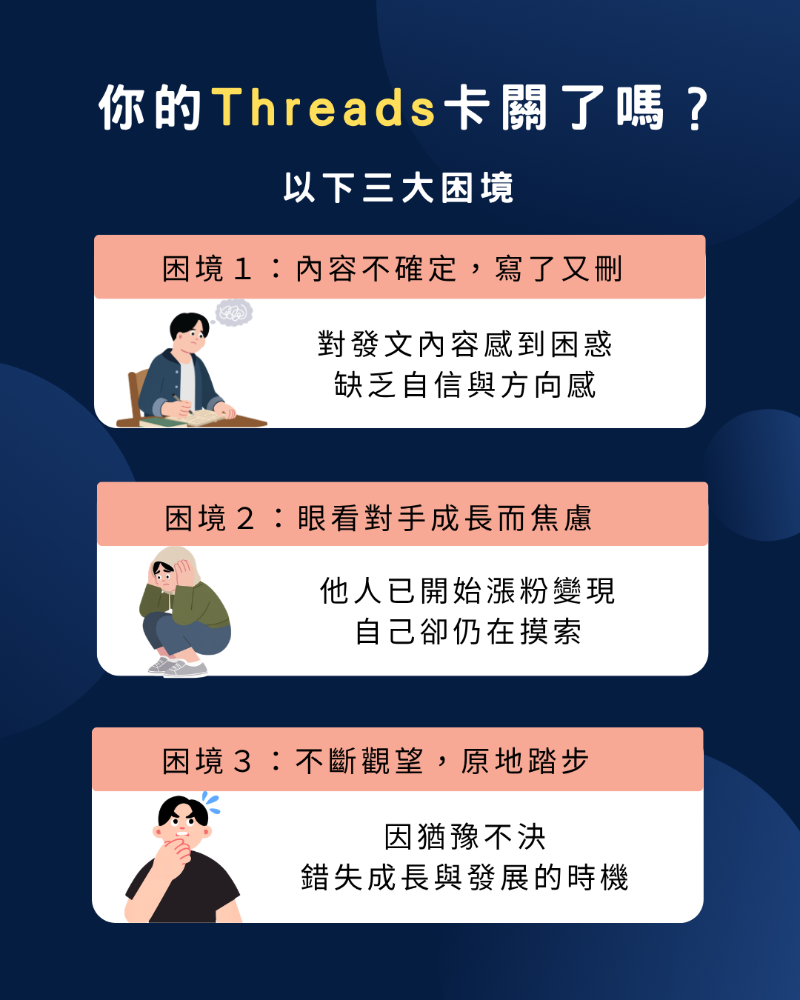
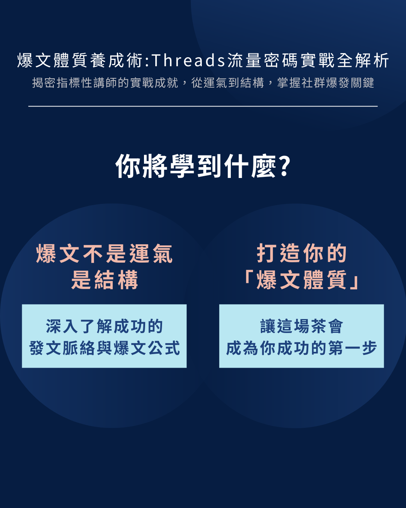
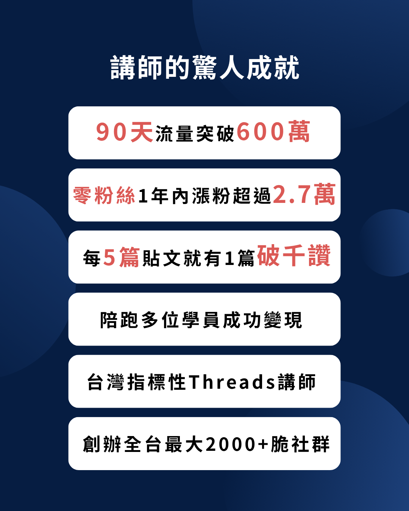
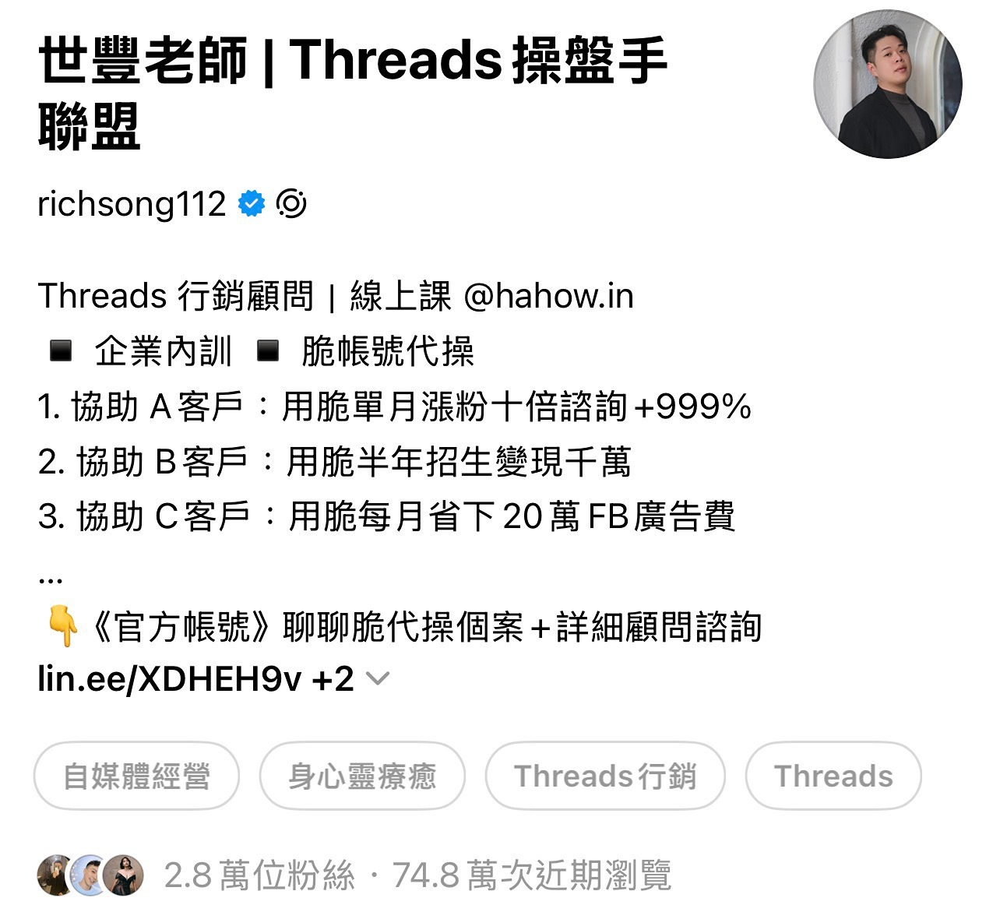
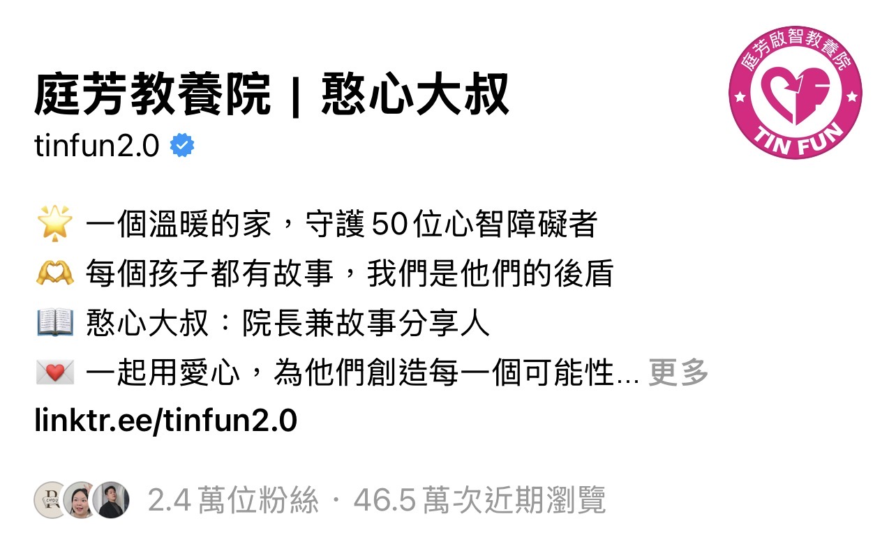
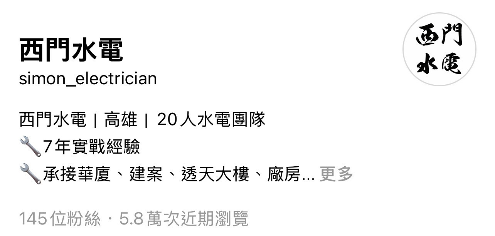
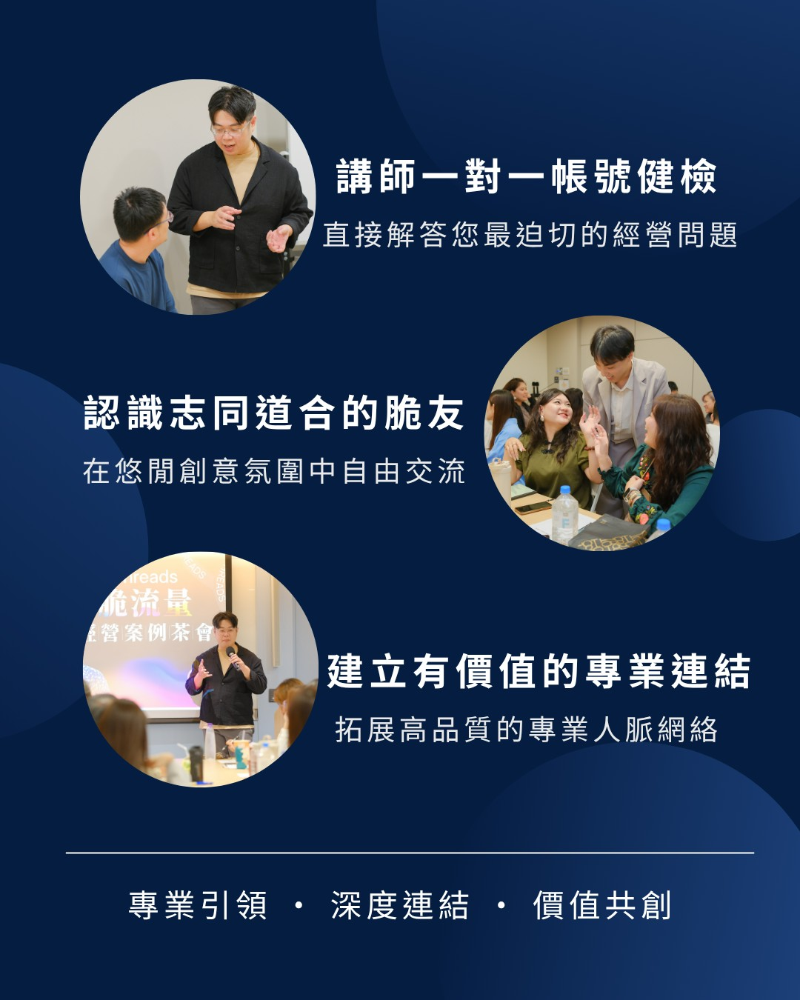
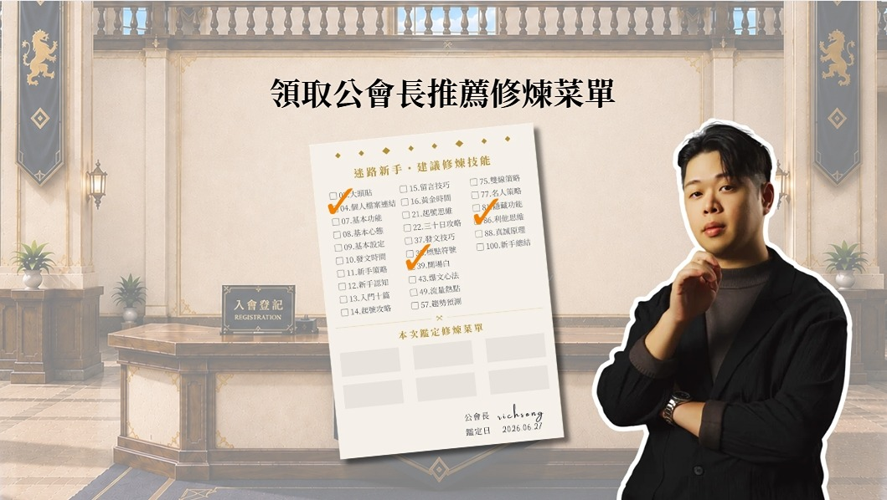
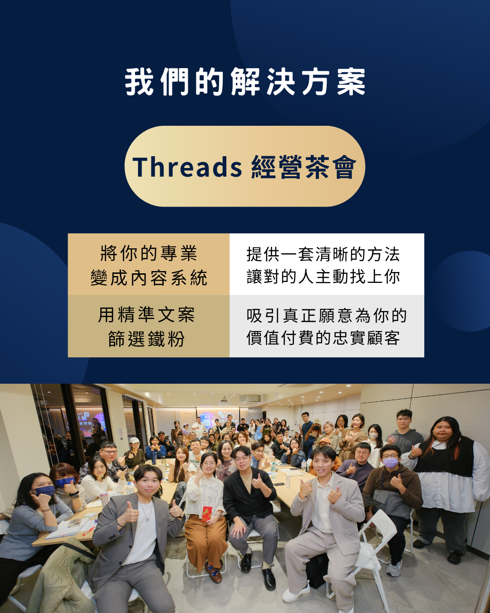

11月主題脆茶會
NT. 990
本入口名額 20 人
活動日期：2026 年 11 月 29 日 (日)
活動時間：下午 13:00~16:30
活動地點：CollaPlay 5F 展演廳
教妳用真實感取代精緻感，用系統化取代靈感。把專業變成內容系統，讓對的人主動找上你，用三軍策略，篩選出為你付費的鐵粉。

你是否正處於自媒體的「發文迷茫期」？
我教你把專業變成內容系統，讓對的人主動找上你，透過精準的文案，篩選出願意為你付費的鐵粉。

脆自媒體茶會，就是你打造爆文體質的第一步。
爆文不是運氣，是系統結構。

🎯 為什麼你絕對不能錯過？
邀請三位來自不同行業的脆經營者，包含脆上影響力品牌，變現成功的品牌創辦人以及專業的行銷講師，分享最實用、第一手的成功秘訣與實操經驗！
✨ 第一位盛豐數位有限公司創辦人：

1. 世豐老師｜28K 粉絲數
▪️協助短影音講師：3 個月創造 300 萬營收
▪️協助遊戲工作室：每月節省 20 萬廣告費
▪️傳產/中小企業：低成本獲客 ✕ 精準招募
✨ 第二位庭芳教養院 院長 憨心大叔：

2. 憨心大叔｜24K 粉絲數
▪️一個溫暖的家，守護50位心智障礙者
▪️每個孩子都有故事，我們是他們的後盾
▪️憨心大叔：院長兼故事分享人
✨ 第三位 第 2 屆脆操盤手畢業生：

3. Demi
▪ 協助服飾品牌半年增粉 3000+
▪ 協助水電公司一週創造百萬商機
▪ 靠Threads成功為自己月加薪 1-2 萬


這場 Threads 茶會適合誰？
・企業主、老闆、業務、小編、創作者
・個人品牌、自媒體經營者
・行銷人、操盤手、藏鏡人
・組織行銷、電商人
・想增加收入的媽媽
・要提升曝光度的你
・要拓展人脈的你
・經營面臨卡關，需要突破的你
